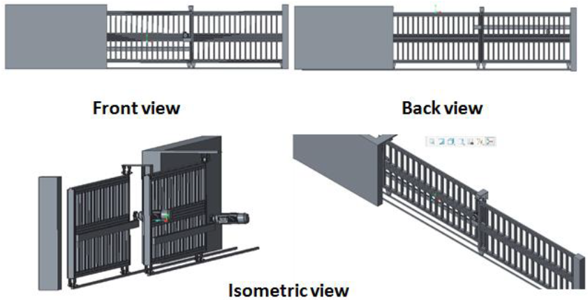
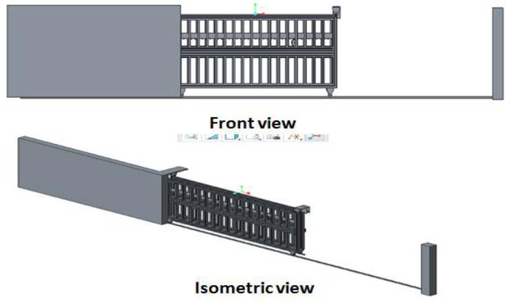
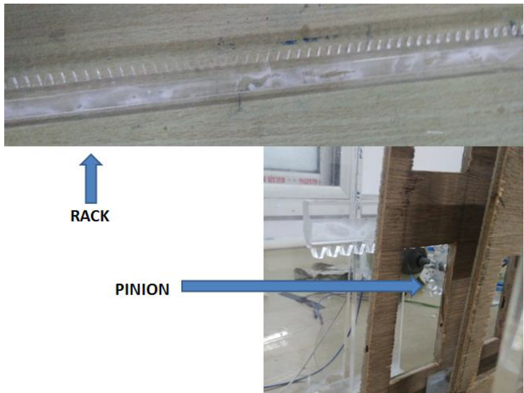

Indian Institute of Technology Patna, India · IIT Patna · Mechanical Design · Automation
Automated Security Gate Design and Prototype
Affiliation: Indian Institute of Technology Patna, India
This project focused on designing and optimizing a compact automated sliding security gate concept for installation at the Reserve Bank of India, Patna, with a scaled working prototype.
Project overview
The security gate was designed for a restricted-access installation where limited available space and water accumulation near the gate area created practical design constraints.
The proposed concept divided the sliding gate into two movable sections so that one section could be operated for smaller access needs and both sections could be opened for larger vehicles. This reduced overhang and improved packaging for a constrained installation site.
My contribution
- Worked on the mechanical design and optimization of the automated security gate concept.
- Developed CAD models for the gate, rack, pinion, guideway, and overall assembly.
- Supported prototype fabrication using acrylic, plywood, laser-cut components, rack-and-pinion transmission, and motorized actuation.
- Prepared sizing calculations for gate weight, friction force, torque requirement, motor selection, rack/pinion design, guideway, and hardware.
Objectives
- Design a sliding security gate suitable for a space-constrained installation.
- Reduce overhang by using a two-section sliding gate architecture.
- Develop a CAD assembly and working prototype.
- Size the rack, pinion, motor, guideway, rollers, bolts, and structural components.
- Explore automated actuation using a Raspberry Pi-based control concept.
Results
- Created a complete CAD concept with closed, partially opened, and fully opened gate configurations.
- Built a scaled working prototype using lightweight acrylic/plywood components and rack-and-pinion motion.
- Estimated full-scale gate requirements, including approximately 150 N·m motor torque with safety factor.
- Developed a prototype control concept using Raspberry Pi, GPIO-based motor control, relays, and wireless operation.
Tools and methods
Selected figures

Closed gate different views. Front, back, and isometric CAD views of the two-section sliding gate concept in the closed configuration.

Additional CAD configuration views. Front and isometric views showing another gate configuration and the overall packaging concept.

Rack-and-pinion actuation. Rack and pinion components used to translate motor rotation into linear gate motion in the working prototype.

Working prototype. Final fabricated prototype of the automated security gate. This image is also used as the project cover on the main portfolio page.